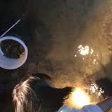
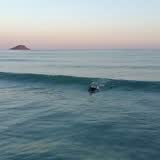
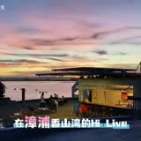
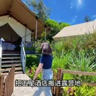
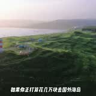

👋 欢迎来到 HI LIVE 半岛落日营地
亲爱的朋友，先听阿龙讲一段 30 秒的营地介绍 🎙️
▶️ 收听阿龙介绍
📖 改用语音合成
欢迎来到 HI LIVE 半岛落日营地！我们是福建省漳浦县佛昙镇整美村的海边营地。营地本体正在整修升级中，预计二零二七年四月重新开业；不过营地里的格格户外窑烤烘焙坊已经照常开窑，每周五、六、日十一点到下午两点，采预约制、小批量接待。您可以通过本页面查看每日潮汐、天气、日落时间，还能订阅大潮钓鱼提醒。赶海抓螃蟹建议晚上七点到九点半，看鱼骨沙洲请在干潮前后两小时到达。期待与您在海边相遇，祝您有一个难忘的周末！
今天不再打扰
我知道了
HI LIVE 半岛落日营地
来落日营地，过不一样的周末
鱼骨沙洲 · 白浪浅水 · 无敌落日 ｜ 潮汐先知道，行程不扑空
📅 —
农历—
潮况—
📍 一键导航到营地
📍 一键导航到营地
福建省漳州市漳浦县佛昙镇整美村
观海路 · 井尾王公庙旁（海边）
也可在地图 App 里直接搜「hilive落日营地」
🚗 高德地图（推荐）
装了App一键唤起
🗺️ 百度地图
网页版也能用
🧭 腾讯地图
微信里最顺
📋 复制地址文字（发给朋友）
取消
🔇
—
读取中…
—
天气实况
--
°C
正在获取…
湿度
--
风速
--
🌊 海边天气随时会变，建议出发前再看一次
今日潮汐时刻
🌊 满潮
--:--
--
米
白浪浅水登场
🐚 干潮
--:--
--
米
沙洲浮现·赶海好时机
🌊 满潮
--:--
--
米
白浪浅水登场
🐚 干潮
--:--
--
米
沙洲浮现·赶海好时机
潮汐曲线
数据：将军澳站（国家海洋信息中心 586 · 距营地直线 17 公里） ｜ 蓝线=潮高 ｜ 🟢 绿牌 = 现在时刻
表上是天文潮理论值：海边实际最低点通常再晚 20–40 分钟，死汛日退到底后水几乎不动
正在获取今天的潮汐与天气…
今日节目单
（潮汐驱动）
🐚
鱼骨沙洲黄金时段
王牌
🕐 —
按今日潮汐自动计算…
🦀
礁石区夜赶海（抓螃蟹）
亲子
🕐 —
按今日潮汐自动计算…
🏄
白浪浅水玩水
涨潮限定
🕐 —
按今日潮汐自动计算…
🌅
落日桨板·日落观赏
必看
🕐 —
按今日潮汐自动计算…
🏊
防波堤内湾·亲子时光
全天
🕐 09:00–17:00
内湾外浪被挡、水深及膝，桨板新手、独木舟、小朋友戏水的天然安全池
🔥
篝火·露天电影·烟花
夜场
🕐 —
天黑后海边篝火升起，露天电影开演，夜里还有烟花（现场安排为准）
营地好伙伴
（合作伙伴推荐）
🥖
格格户外窑烤烘焙坊
窑烤·面包·DIY
就在营地里。柴火窑现烤葱花包、吐司、欧包，亲子 DIY 披萨，团建包场也行。周五、六、日 11:00 开窑、14:00 收窑，需微信预约
↗ 点我看完整菜单与预约

阿聪赶海
赶海体验
跟着阿聪去赶海！礁石区哪里藏螃蟹他最清楚，装备齐全，新手也能满载而归。点卡片跳转抖音号
▶ 点我直接看视频

阿城冲浪赶海
冲浪教学
阿城教练带你追白浪——营地的长浪线最适合入门，趴板、冲浪一次就上手。还会带你去赶海
▶ 点我直接看视频
🤿
小戴潜水钓鱼
潜水海钓
想看海底世界跟小戴走！浮潜、海钓一条龙，这片海的秘密他都知道
📞 预约咨询：营地客服专线 15392467749
🌿
闽龙生态农场
生态农场
闽龙生态农场——整美村本地生态种植，点卡片直接打开农场详情
↗ 点我打开闽龙生态农场的视频号
深邃度假酒店
海景住宿
漳浦本地海景度假酒店，点开看房间实拍与无敌海景
▶ 点我直接看视频
🤝 合作伙伴 · 排名不分先后 ｜ 合作洽谈：15392467749
今日日落
🌇 太阳沉入海平面的时刻
建议日落前 90 分钟就位
--:--
未来 7 天预报
日期
潮况
满潮／干潮
日落
主打
正在获取未来七天潮汐…
🎣 大潮钓鱼提醒订阅
🐟
大潮前后 · 海鱼最肥
农历初一十五前后是天文大潮，也是海钓、矶钓、赶海的黄金窗口
近期大潮日：
计算中…
适合：
🎣 海钓 🦀 赶海 🌊 矶钓 🦐 路亚
选择偏好（可多选后备注）
🎣 海钓
🌊 矶钓
🦐 路亚
🦀 赶海
🚤 船钓
订阅提醒 · 大潮前通知我
或
📱 直接加阿龙微信（注明“钓鱼”）
✓
订阅成功！
大潮日前一晚，阿龙会微信或电话通知您。也可以现在长按二维码加阿龙好友。
➕ 加阿龙微信
🐋
大潮·渔汛日历
：初一十五前后天文大潮，海鱼最肥、礁石区最热闹——
近期大潮日计算中…
。想钓鱼可加阿龙微信或打客服专线 15392467749，大潮前一晚通知您。
今日晨报（客服群发版）
正在获取今天的潮汐数据，请稍候…
正在获取今天的潮汐数据，请稍候…
📋 一键复制晨报文案
住哪儿
（2027 年 4 月开订 · 现在可先登记）
⛺
野奢帐篷 · 共 16 顶
暂定约 800/晚
分三种：
亲子房
（一家大小睡得开）、
家庭式
、
精致小间
。
每顶都有
独立卫浴
，另配小客厅、小厨房，门口是
烧烤露台
。
整顶铺木地板、架高离地
建在海滩上方——海边湿气重，离地才住得舒服。
🌅 拉开帘子就是海，晚上听着浪睡
🏨
予光民宿
旁边不到 200 米
三十几间房，混凝土实体建筑，冷气热水齐全，也看得到落日（位置比较靠前，前面没有沙滩）。
带长辈、带小小孩、怕潮怕虫的客人，住民宿更稳当。
🛏 帐篷睡气氛，民宿睡安稳，两种客人都接得住
🎁
早订 9 折
提前 30 天预约
提前 30 天
以上预约，房费直接
打 9 折
。
早订，我们才好排班、备料、安排接待——省下来的那份人力，就折成您的房价。
细则（提前几天算早订、节假日是否适用）以开订公告为准，会同步更新在这一页。
👇 下面填个登记，开订时第一个通知您
📝 早订 9 折 · 预约登记
现在只是登记，
不收费、不用付订金
。2027 年 4 月开订时按登记顺序通知您，9 折权益保留。
登记内容不会自动上传，填完点下面按钮复制，发微信给我们就行。
怎么称呼您
手机号 / 微信号
想住哪种
还没定，请帮我推荐
亲子房（一家大小睡得开）
家庭式
精致小间
予光民宿（隔壁混凝土实体建筑）
预计入住
住几晚
几位大人
几个小孩
有什么要交代的（可以不填）
📋 一键复制登记信息
复制后打开微信，发给营地客服；或直接拨 15392467749 讲一声也行
🔧
现在只登记，不收钱
：营地本体整修中，预计
2027 年 4 月
重新开业，正式价格、各房型数量、开订日期都会公告在这一页。已登记的客人，开订时按顺序通知，
9 折保留
。
想先来海边感受一下，营地里的
格格窑烤
现在照常开窑（周五六日 11:00–14:00·预约制），可以先约窑烤。
吃什么
（三条吃线 · 现在就能约一家）
🥖
格格户外窑烤烘焙坊
现在就在开窑
营地里的柴火窑。现烤
葱花包、吐司、欧包
，还有
披萨套餐
和亲子
DIY 体验课
；烤鸡、牛排筹备中。
周五、六、日 11:00 开窑、14:00 收窑
，实行
预约制、小批量接待
——整修不影响，现在就能来。
↗ 看菜单与预约方式
🐡
小蔡 · 河豚宴
筹备中
营地里的另一条吃线，由厨师出身的小蔡主理。
随营地一起在 2027 年 4 月开放
，菜色、价位、能不能接团体都还在定。
🕐 定了第一时间更新在这一页
🔥
日式炉端烧
筹备中
炭火慢烤的一摊，也是小蔡负责，和河豚宴同一个灶班底。
同样随营地 2027 年 4 月开放
，细节待定。
🕐 定了第一时间更新在这一页
📞
现在能约的只有窑烤
：格格微信／电话
13911225676
，营地客服
15392467749
。
本页只讲“这儿能吃到什么”，各家的菜单与价位在各自页面；
河豚宴、炉端烧的细节还没定，我们不先写、也不先报价
。
怎么来
（自驾直达 · 厦门约 1 小时）
📍
地址 · 导航搜「hilive落日营地」
三个地图都认
福建省漳州市
漳浦县佛昙镇整美村
（观海路 · 井尾王公庙旁，海边）
手机地图直接搜
「hilive落日营地」
就能到，高德、百度、腾讯都认这个名字。
🚗 点我一键导航
⏱️
开车大概多久
大约
厦门 出发 → 约
1 小时
漳州（市区）出发 → 约
40 分钟
漳浦县城 出发 → 约
40 分钟
🌅 到了先看落日，别赶时间
🅿️
停车
待确认
车停在哪一侧、能停几台，我们还在确认，
确认后补在这一页
。
来之前想先问清楚，直接打营地客服
15392467749
。
🚐
接驳车 / 包车
暂无
目前
没有接驳车，也没有包车服务
，请自驾或自行打车过来。
打车来的话，回程建议提前跟司机约好时间。
🧭
一句话记法
：地图搜「hilive落日营地」，厦门约 1 小时、漳州与漳浦县城约 40 分钟，到村口沿观海路走到井尾王公庙旁就是海边。地址建议先复制一份再出发，海边信号偶尔不稳。
落日营地，怎么玩？
（达人带你玩）
蔡先生的分享
视频号
起步即沙滩，退潮还能赶海！达人实拍带你走进漳浦HiLive落日野奢营地
↗ 点我直接看视频

芸游天下☁️
视频号
野趣与浪漫共存，邂逅山海秘境！跟着芸游天下打卡漳州漳浦HiLive
↗ 点我直接看视频

黑金酱
视频号
吸引我的不止有冲浪，还有超美的HiLive落日营地——达人黑金酱实拍
↗ 点我直接看视频
🎵
浪花一朵朵 · 营地主题曲
主题曲
任贤齐/光良/阿牛经典合唱，海边营地的浪花与浪漫，点开直接听 🎶
▶ 点我直接听主题曲

毛毛爱吃辣
达人实拍
毛毛带你吃玩落日营地！海边美食、帐篷住宿、营地生活一次分享
▶ 点我直接看视频
🎬 达人玩法持续更新 · 排名不分先后 ｜ 合作洽谈：15392467749
⚠️
营业状态
：营地本体整修升级中，预计
2027 年 4 月
重新开业；
营地里的「格格户外窑烤烘焙坊」已照常开窑
——预约制、周五六日 11:00–14:00、小批量接待，整修期间也能来。潮汐预报照常每日更新，欢迎收藏本页提前规划行程。沙洲浮现受潮汐影响，以现场实际为准。
🤖 AI 客服小助手
HI LIVE 半岛落日营地 · 24小时在线
✕
发送
AI 答不上来？打客服专线 ☎️
15392467749
💬
问问AI
二维码
用微信扫一扫即可关注影音号
或长按二维码识别
关闭
✓ 已复制，去粘贴给客人吧